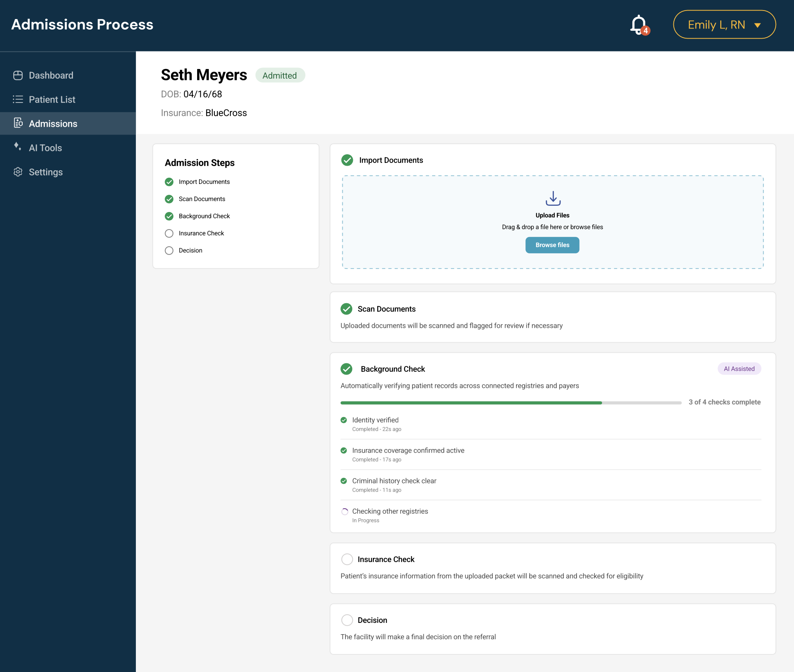
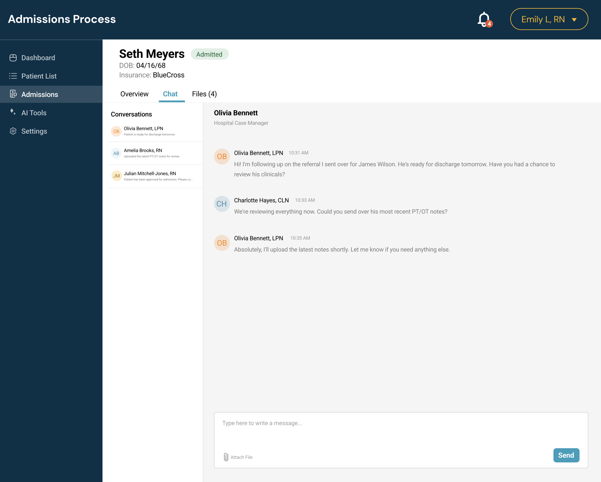

Admitting a patient to a skilled nursing facility meant jumping between four separate systems and websites to run checks, and it took up to 30 minutes per referral. I led the design of a single workflow that brings every step into one place, including AI-assisted background checks and built-in team chat. Referral processing dropped to under 5 minutes, and staff could handle 6x more referrals in the same time.
This project started with clients. They told us admitting patients was a struggle because every referral meant checking a different website for each background check and verification, and none of those tools talked to each other. The process was disjointed, slow, and easy to get wrong, and every minute spent on it was a minute a patient waited for a decision.
It wasn't a new complaint. The four-system process had been a problem for more than two years. What changed was a new leadership push to fix it, and a clear opportunity: combining these checks into a single workflow inside the EHR was a novel approach in a space where these tools had always lived separately.
Before designing anything, I wanted to understand how admissions actually worked day to day, not how it was supposed to work on paper. I gathered information through:
In total I spoke with and observed somewhere between 6 and 15 people. I then built a journey map of the existing four-system process, which made the problem visible to the whole team in a way a list of complaints never could.
That last finding shaped the design in a big way. The new workflow couldn't just be faster. It also had to make the process itself visible and teachable.
I designed a single admissions workflow with a clear, step-by-step structure: import documents, scan documents, run background checks, check insurance, and reach a decision. Staff can see where they are in the process at all times, without leaving the screen or re-entering information.
The design went through 3 to 4 rounds of iteration, and I tested prototypes with real staff before launch. I partnered closely with product managers, engineers, clinical and compliance staff, and other designers and researchers, which mattered because we were designing under real constraints: a tight timeline, technical limits in connecting different systems, HIPAA and other compliance requirements, and the need to get stakeholder buy-in across all of it.

Fitting so many steps into one flow. Bringing four systems together meant a lot of moving pieces. The challenge was making all of it feel simple, not like four tools crammed onto one page. The step tracker on the left and the clear, collapsible step cards were how I kept the flow easy to follow.
Making the AI feel trustworthy. The background check was a chance to save real time with automation, but staff needed to feel confident acting on the results. Instead of a single pass or fail, the step shows each check being run in plain language ("Identity verified," "Insurance coverage confirmed active," "Criminal history check clear"), with a progress count and timestamps, so staff can see exactly what the system did and what it's still working on.

The unified workflow cut referral processing time from up to 30 minutes to under 5, letting staff process 6x more referrals in the same amount of time.